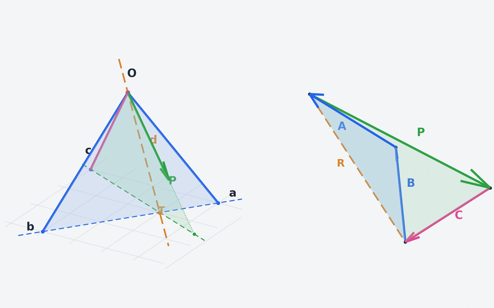
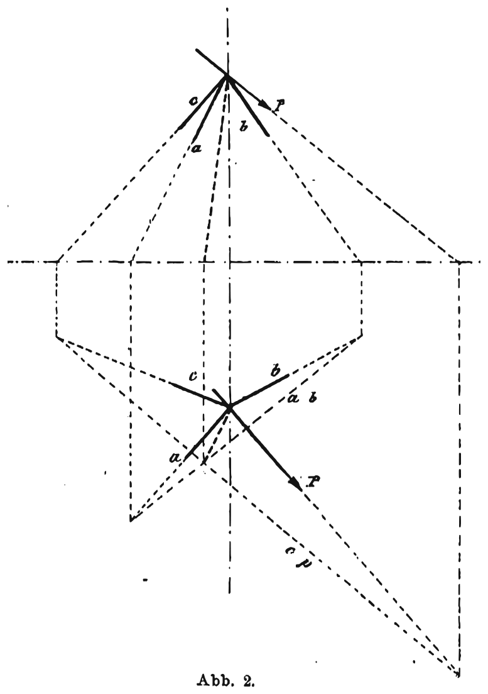
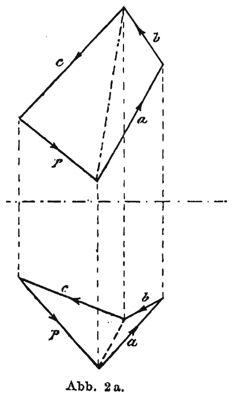
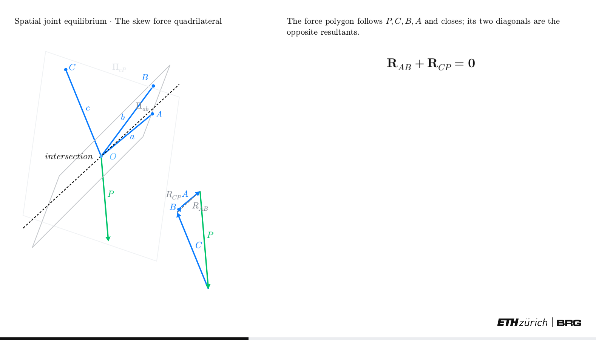
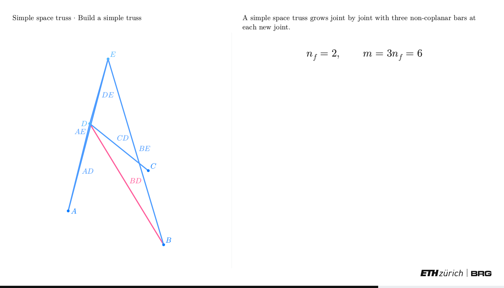

Books / August Föppl · The Space Truss
Spatial joint equilibrium
Skew force quadrilateral in elevation and plan · August Föppl, 1892
Three non-coplanar bars meet an external force at one joint. Two auxiliary planes provide the line shared by their resultants; the force sides then form a closed skew quadrilateral. This page reconstructs that construction with NumPy and COMPAS, rather than treating it as Thrust Network Analysis.

1 · Read the original figures and text
Part I, Chapter 5, §23, printed pp. 34–36. The construction begins on p. 35; Figs. 2 and 2a appear on p. 36. Föppl requires three bars that are not all in one plane. The two projections must be completed independently, after which corresponding corners align vertically.


The resultant of A and B must be equal and opposite to that of C and P. Each of these two resultants must therefore fall on the line of intersection of the two planes.
Assumptions: pin-jointed spatial joint, axial member forces, known bar directions and external load. Tension is positive and compression negative. The original drawing supplies topology and construction rules, not unique coordinates or force values, so the examples here are explicitly new numerical examples.
2 · Reconstruct the auxiliary planes and force polygon
The unit bar directions point away from the joint. With external force P, equilibrium is:
A a + B b + C c + P = 0- Form the plane normals
n_ab = a × bandn_cP = c × P. - Compute their intersection direction
d = n_ab × n_cP. - Find the signed forces with
numpy.linalg.solve([a b c], -P). - Assemble the polygon in the order
P, C, B, A; its diagonals areR_ABandR_CP. - Check the 3D geometry and derive elevation and plan from that same geometry.

Main example: A = 0.44783429, B = 0.09718253, C = 1.08012345, all in tension. The direction matrix has determinant 0.78590525 and condition number 2.04586681.

3 · Extend to a simple space truss
Following §13, a simple truss grows by adding three non-coplanar bars per new joint. The second example has two free joints and six bars. The joint-by-joint solution is compared with one global equilibrium-matrix solution.

AD = -0.56382921 BD = +0.03543304 CD = -0.24276921
AE = -0.08919281 BE = -0.49312636 DE = -0.29546842Local and global forces agree with residual 6.94 × 10⁻¹⁷. A separate §24 example identifies the fourth, out-of-plane bar as unstressed.
4 · Validation, not just a plausible drawing
- Orthogonal baseline and zero-load solution.
- Determinant and condition number of the direction matrix.
- Equilibrium residual and polygon closure.
- Both resultants parallel to the auxiliary-plane intersection.
- Independent augmented-matrix SVD/nullspace agreement.
- Superposition of independent load cases.
- Elevation/plan projector alignment.
- Local-versus-global simple-truss forces.
- Zero-force example, coplanar-geometry rejection, and undefined auxiliary-plane rejection.
The main joint residual is 2.22 × 10⁻¹⁶. The augmented-matrix SVD gives the same forces as the direct NumPy solve.
5 · Use the template
spatial_joint.py Method notes Card metadata Vector projections Joint deck Simple-truss deck

python spatial_joint.py
python spatial_joint.py --interactiveDependencies: NumPy, COMPAS, compas_viewer, Matplotlib, and Pillow. No compas_tna dependency is required.
The page images are session-viewer captures of the same computed examples. To run that deck locally, keep the three YAML files and img/projections.png in session_viewer/examples/stage/foppl-spatial-joint/, then open ?stage=decks/foppl-spatial-joint/index.yaml&data=off in the viewer served by Trunk.

Boundaries
This is not a compression-only form-finding method or a TNA implementation. It does not include joint bending stiffness, slack-member activation, masonry envelopes, reciprocal primal/dual grids, or optimization. Block’s 2009 MIT dissertation reproduces Föppl’s Plate II as three-dimensional graphic statics, but TNA adds different unknowns, constraints, and a search for admissible equilibrium networks.